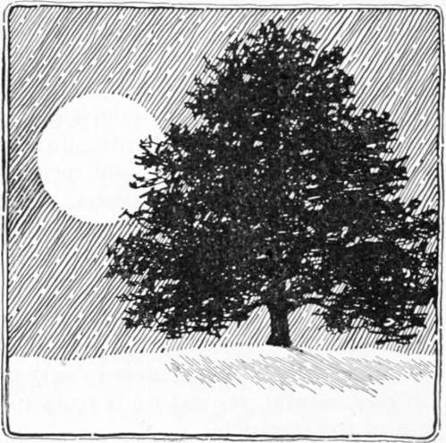

On Wood And Plantations. Part 9
Description
This section is from the book "Landscape Gardening", by Andrew Jackson Downing. Also available from Amazon: Landscape Gardening.
On Wood And Plantations. Part 9
From the inspection of plans like these, the tyro may learn something of the manner of arranging plantations, and of the general effect of the natural style in particular cases and situations. But the knowledge they afford is so far below that obtained by an inspection of the effects in reality, that the latter should in all cases be preferred where it is practicable. In this style, unlike the ancient, it is almost impossible that the same plan should exactly suit any other situation than that for which it was intended, for its great excellence lies in the endless variety produced by its application to different sites, situations, and surfaces; developing the latent capacities of one place and heightening the charms of another.
But the leading principles as regards the formation of plantations, which we have here endeavored briefly to elucidate, are the same in all cases. After becoming familiar with these, should the amateur landscape gardener be at a loss how to proceed, he can hardly do better, as we have before suggested, than to study and recur often to the beautiful compositions and combinations of nature, displayed in her majestic groups, masses, and single trees, as well as open glades and deep thickets; of which, fortunately, in most parts of our country, checkered here and there as it is with beautiful and picturesque scenery, there is no dearth or scarcity. Keeping these few principles in his mind, he will be able to detect new beauties and transfer them to his own estate; for nature is truly inexhaustible in her resources of the Beautiful.
Classification Of Trees As To Expression
The amateur who wishes to dispose his plantations in the natural style of Landscape Gardening so as to produce graceful or picturesque landscape, will be greatly aided by a study of the peculiar expression of trees individually and in composition. The effect of a certain tree singly is often exceedingly different from that of a group of the same trees. To be fully aware of the effect of groups and masses requires considerable study, and the progress in this study may be greatly facilitated by a recurrence from groups in nature to groups in pictures.
As a further aid to this most desirable species of information we shall offer a few remarks on the principal varieties of character afforded by trees in composition.
Almost all trees, with relation to forms, may be divided into three kinds, viz. round-headed trees, oblong or pyramidal trees, and spiry-topped trees; and so far as the expressions of the different species comprised in these distinct classes are concerned, they are, especially when viewed at a distance (as much of the wood seen in a prospect of any extent necessarily must be), productive of nearly the same general effects.
Fig. 16. Round-headed Tree.
Round-headed trees compose by far the largest of these divisions. The term includes all those trees which have an irregular surface in their boughs, more or less varied in outline, but exhibiting in the whole a top or head comparatively round; as the oak, ash, beech, and walnut. They are generally beautiful when young, from their smoothness, and the elegance of their forms; but often grow picturesque when age and time have had an opportunity to produce their wonted effects upon them. In general, however, the different round-headed trees may be considered as the most appropriate for introduction in highly-cultivated scenery, or landscapes where the character is that of graceful or polished beauty; as they harmonize with almost all scenes, buildings, and natural or artificial objects, uniting well with other forms and doing violence to no expression of scenery. From the numerous breaks in the surface of their foliage, which reflect differently the lights and produce deep shadows, there is great intricacy and variety in the heads of many round-topped trees; and therefore, as an outer surface to meet the eye in a plantation, they are much softer and more pleasing than the unbroken line exhibited by the sides of oblong or spiry-topped trees. The sky outline also, or the upper part of the head, varies greatly in round-topped trees from the irregularity in the disposition of the upper branches in different species, as the oak and ash, or even between individual specimens of the same kind of tree, as the oak, of which we rarely see two trees alike in form and outline, although they have the same characteristic expression; while on the other hand no two verdant objects can bear a greater general resemblance to each other and show more sameness of figure than two Lombardy poplars.
"In a tree," says Uvedale Price, "of which the foliage is everywhere full and unbroken, there can be but little variety of form; then, as the sun strikes only on the surface, neither can there be much variety of light and shade; and as the apparent color of objects changes according to the different degrees of light or shade in which they are placed, there can be as little variety of tint; and lastly, as there are none of these openings that excite and nourish curiosity, but the eye is everywhere opposed by one uniform leafy screen, there can be as little intricacy as variety." From these remarks, it will be perceived that even among round-headed trees there may be great difference in the comparative beauty of different sorts; and judging from the excellent standard here laid down, it will also be seen how much in the eye of a painter a tree with a beautifully diversified surface, as the oak, surpasses in the composition of a scene one with a very regular and compact surface and outline, as the horse-chestnut. In planting large masses of wood, therefore, or even in forming large groups in park scenery, round-headed trees of the ordinary loose and varied manner of growth common in the majority of forest trees, are greatly to be preferred to all others. When they cover large tracts, as several acres, they convey an emotion of grandeur to the mind; when they form vast forests of thousands of acres, they produce a feeling of sublimity; in the landscape garden when they stand alone, or in fine groups, they are graceful or beautiful. While young they have an elegant appearance; when old they generally become majestic or picturesque. Other trees may suit scenery or scenes of particular and decided characters, but round-headed trees are decidedly the chief adornment of general landscape.
Continue to: